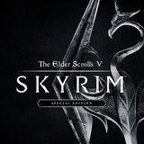

One of my favorite hobbies is gaming. Recently Nintendo has brought new information on the Nintendo Switch.
Nintendo has a starting line up of Zelda: Breath of the wild has me excited. Skyrim feels ok, but let's be honest, I think everyone's had enough of skyrim remade. Other title that are coming out later like Super Mario Odyssey are things to look forward to.
As exciting as things are, there are things that I don't like. While it can't be helped, the Switches' battery life is short. On a demanding game like the new Zelda, the battery life is 3 hours, normally the average battery life is around 2.5 to 6 hours. The fact that some peripherals are also sold separately rather than included in the Switch package is kind of a turn off.
These are my thoughts so far. More to come later!